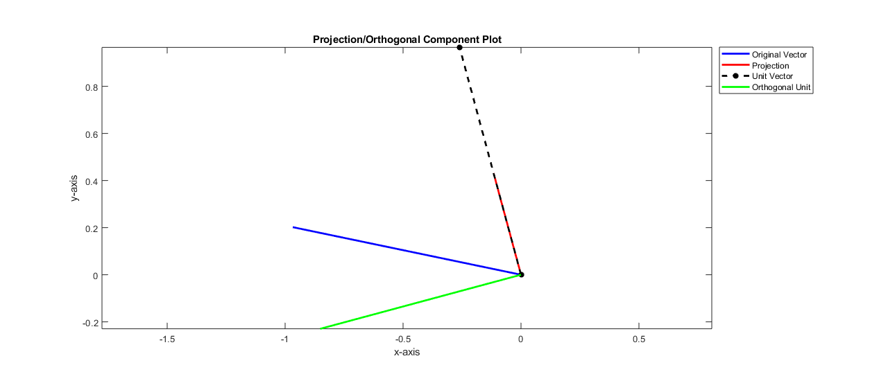

Contents
- Math Tools I - HW #1 - Question 2: Inner Product with a Unit Vector
- PART 1
- a) The Component of v Lying Along the Direction of u
- (b) Component of vector v that is orthogonal to vector u
- (c) Distance from vector v to the projection vector
- Show all of this in 2D...
- PART 2--> Proving this works for higher dimensions
- First I will calculate all of the necessary "pieces" to this puzzle
- 1) The vector in (a) falls along the same line as the vector u, or the unit vector.
- 2) The vector in (a) is orthogonal to the vector in (b)
- 3) The sum of vectors in (a) [projection] and (b)[orthogonal] is equal to vector vHD
Math Tools I - HW #1 - Question 2: Inner Product with a Unit Vector
% Purpose: This code has been written to wrestle with question 2 of the % first homework of math tools I. % Author: Matthew DeVerna % Date: 09/24/19
PART 1
%{ Given unit vector u and arbitrary vector v - write expressions for computing: --> PART 1 a) the component of v lying along the direction of u, (b) the component of v that is orthogonal (perpendicular) to u, and (c) the distance from v to the component that lies along direction u. %}
a) The Component of v Lying Along the Direction of u
%{ This question is asking us to project vector v onto the line that vector u falls on. %} % Create random vectors v = randn(1,2) u = randn(1,2) % We find the length of vector u and then create it's unit vector lenth_u2 = sqrt(u*u'); unitVec = u/lenth_u2 ; % This allows us to determine the magnitude/length of the projection vector newLineMagnitude = v*unitVec' ; % We utilize this magnitude to scale the unit vector, giving us the % projection unit projectionUnit = newLineMagnitude * unitVec
v = -0.9677 0.2021 u = -0.3479 1.2901 projectionUnit = -0.1164 0.4316
(b) Component of vector v that is orthogonal to vector u
% We now subtract the projection from the original vector v to get the % orthogonal component orthogonalUnit = v - projectionUnit
orthogonalUnit = -0.8513 -0.2296
(c) Distance from vector v to the projection vector
% This can be found by taking the length of the orthogonal vector just % found... lengthOrthogonalUnit = sqrt(orthogonalUnit*orthogonalUnit')
lengthOrthogonalUnit =
0.8817
Show all of this in 2D...
% Create names for each line to plot (for the legend call below) name1 = 'Original Vector' ; name2 = 'Projection' ; name3 = 'Unit Vector' ; name4 = 'Orthogonal Unit' ; % Plot the original vector vPlot = plot([0,v(1)],[0,v(2)],... 'b', 'LineWidth',2) ; % Set hold to "on" so that subsequent plots do not replace the last one hold on % Plot the projection vector projectionPlot = plot([0,projectionUnit(1)],[0,projectionUnit(2)],... 'r', 'LineWidth',2); % Plot the unit vector unitPlot = plot([0,unitVec(1)],[0,unitVec(2)],... 'k--*', 'LineWidth',2); % Plot the unit vector residualPlot = plot([0, orthogonalUnit(1)], [0, orthogonalUnit(2)],... 'g', 'LineWidth',2); % Set axis to equal proportions axis equal legend(name1, name2, name3, name4, 'location', 'northeastoutside') title('Projection/Orthogonal Component Plot') xlabel('x-axis') ylabel('y-axis')
PART 2--> Proving this works for higher dimensions
%{ This section seeks to prove the above section in higher dimensions by writing code to verify... 1) The vector in (a)- the projection line - falls along the same line as the vector u, or the unit vector. 2) The vector in (a) is orthogonal to the vector in (b) 3) The sum of vectors in (a) and (b) is equal to vector v 4) The sum of squared lengths in vectors (a) and (b) = ||v||^2 The procedure will be the same as above, however, we first create random vectors with 10 dimensions... %}
First I will calculate all of the necessary "pieces" to this puzzle
% Create two random vectors vHD = randn(1,10) ; uHD = randn(1,10) ; % Find the length of both vectors len_vHD = sqrt(vHD*vHD') ; len_uHD = sqrt(uHD*uHD') ; % Create a unit vector from vector u unitVecHD = uHD/len_uHD ; % Find the projection line newLineMagnitudeHD = sum(vHD*unitVecHD') ; % Find projection magnitude projectionUnitHD = newLineMagnitudeHD * unitVecHD ; % Find the orthogonal unit... orthogonalHD = vHD - projectionUnitHD ;
1) The vector in (a) falls along the same line as the vector u, or the unit vector.
%{ Because the dot product = ||x|| * ||y|| * cos(theta_xy) where: x = vector v (in this case) y = vector u (in this case) theta_xy = the angle between them We can find cos(theta) by dividing the dot product by the vector lengths - this will be sufficient to solve the problem %} % Find the dot product of the projection onto the unit dotUnitANDprojection = uHD*projectionUnitHD' ; % Find these vectors lengths length_unitVecHD = sqrt(uHD*uHD') ; length_projectionHD = sqrt(projectionUnitHD*projectionUnitHD') ; % Divide out the lengths cos_theta = dotUnitANDprojection/(length_unitVecHD*length_projectionHD) ; %{ Basically, I got through the below rigmarole in order to be able to do a proper conditional statement check. Since cos_theta should equal either 1 or -1 in this case (if they fall on the same line), we create an if statement to either add one or remove 1 which brings the cos(theta) value to zero. Once it is there, we then test if it is within reasonable rounding error by comparing to 10e^-6 %} if cos_theta < 0 % Check if it's negative cos_theta = cos_theta + 1 ; % Remove one to bring this down to zero if cos_theta < 10e-6 % Check if it is equal to zero disp('The unit vector and the projection line are on the same line') disp('and they point in the opposite direction.') answer = sprintf('If cos(theta) equals -1, the lines point in the opposite direction.') elseif cos_theta > 10e-6 disp('Houston, we''ve got a problem.') end elseif cos_theta > 0 % Check if it's positive cos_theta = cos_theta - 1 ; % Bring it up to zero if cos_theta < 10e-6 % Check if it is equal to zero disp('The unit vector and the projection line are on the same line') disp('and they point in the same direction.') answer = sprintf('If cos(theta) equals 1, the lines point in the same direction.') elseif cos_theta > 10e-6 disp('Houston, we''ve got a problem...') end end %Display results based on the random vectors created...
The unit vector and the projection line are on the same line
and they point in the same direction.
answer =
'If cos(theta) equals 1, the lines point in the same direction.'
2) The vector in (a) is orthogonal to the vector in (b)
%{ We can utilize the same method as above to get the angle between these vectors. If they are othogonal, cos(theta) should = 0. %} % Find the dot product of the projection onto the orthogonal unit dotOrthogANDprojection = orthogonalHD*projectionUnitHD' ; % Find these vectors lengths length_orthogonal_VecHD = sqrt(orthogonalHD*orthogonalHD') ; length_projectionHD = sqrt(projectionUnitHD*projectionUnitHD') ; % Divide out the lengths and find cos(theta) the result cos_theta = dotOrthogANDprojection/(length_orthogonal_VecHD*length_projectionHD) if cos_theta < 10e-6 disp('cos(theta) of the projection and the orthogonal unit == 0.') else disp('cos(theta) of the projection and the orthogonal unit DOES NOT == 0.') end answer = sprintf('If cos(theta) equals 0, you know that your angles are orthogonal.')
cos_theta =
-5.2672e-17
cos(theta) of the projection and the orthogonal unit == 0.
answer =
'If cos(theta) equals 0, you know that your angles are orthogonal.'
3) The sum of vectors in (a) [projection] and (b)[orthogonal] is equal to vector vHD
% Make sure that the orthogonal vector plus the projection equals the original vector %{ To show that the sum of the projection line and the orthogonal line are equal to the original vector (vHD), we subtract vHD from these two vectors sum. Assuming that these vectors are equal, all values should be zero. Then we utilize the function find() to determine where there are zeros (because the conditional "==" will not work due to rounding errors - we utilize the logical condition "< 10e-6"). This returns a list of the indices where the conditional requirement is met. %} % Find the difference difference_btw_vectors = (projectionUnitHD + orthogonalHD) - vHD; % Find where there are zeros... columnIndices = find(difference_btw_vectors < 10e-6) ; % Make sure that the length of the 'columnIndices' vector and the 'difference_btw_vectors' vector is equal % If any of the elements do not equal zero, then it would not be captured % in the 'columnIndices' object and these lengths would not match. equality_check = length(difference_btw_vectors) == length(columnIndices) ; % Display results based on the random vectors created... if equality_check == 1 disp('The sum of the projection vector and the orthogonal vector equals the original vector') else sprintf('The sum of the projection vector and the orthogonal vector DOES NOT equal the original vector\n it appears you have a problem with your calculations') end
The sum of the projection vector and the orthogonal vector equals the original vector